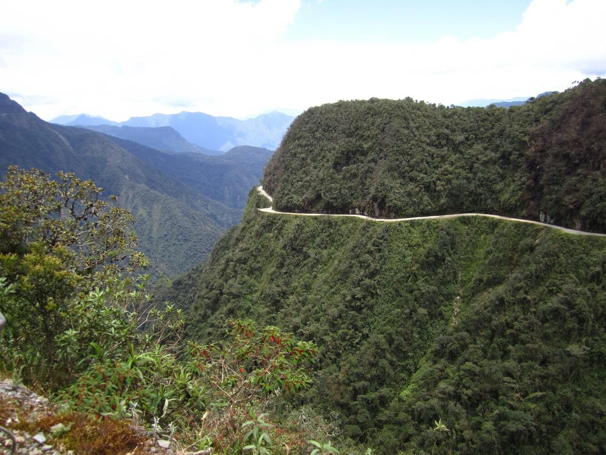
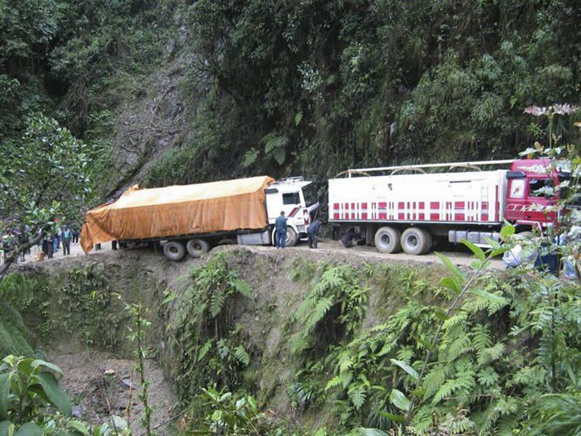
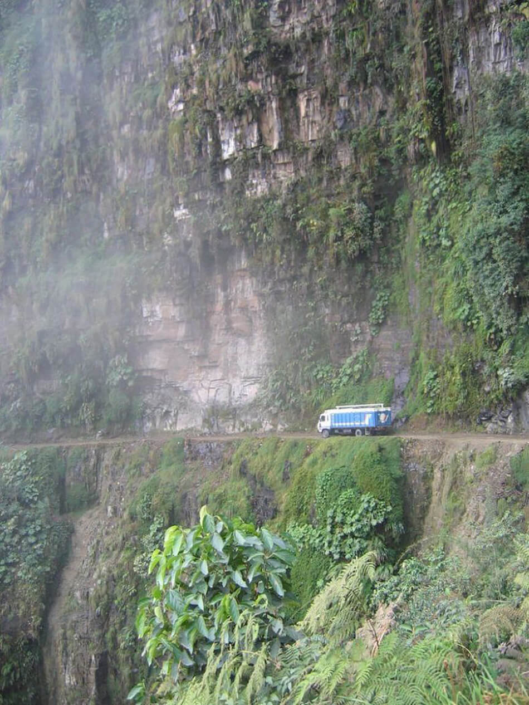
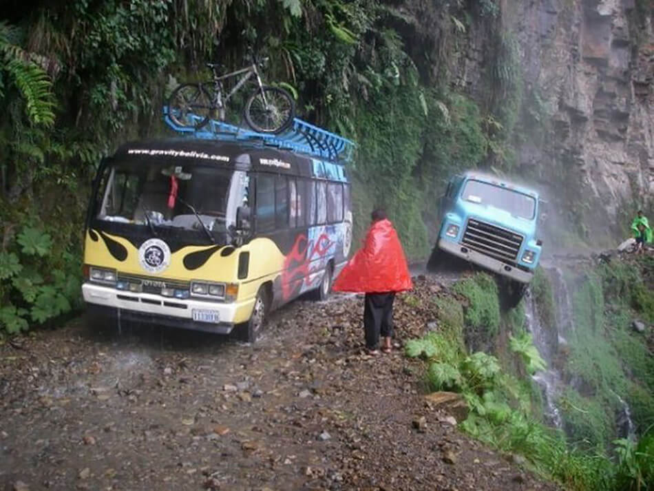
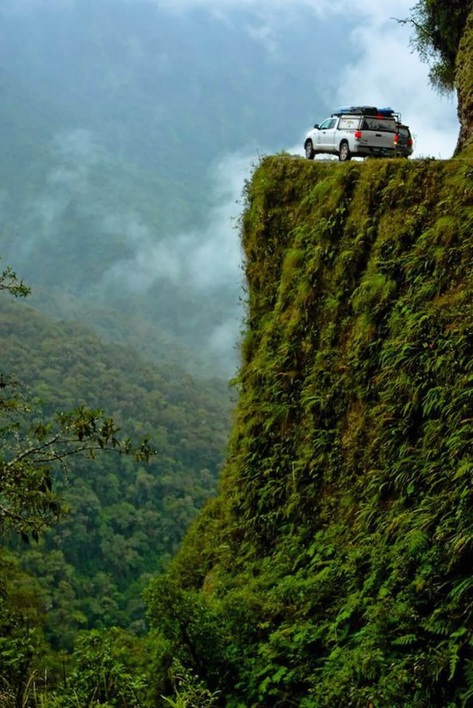
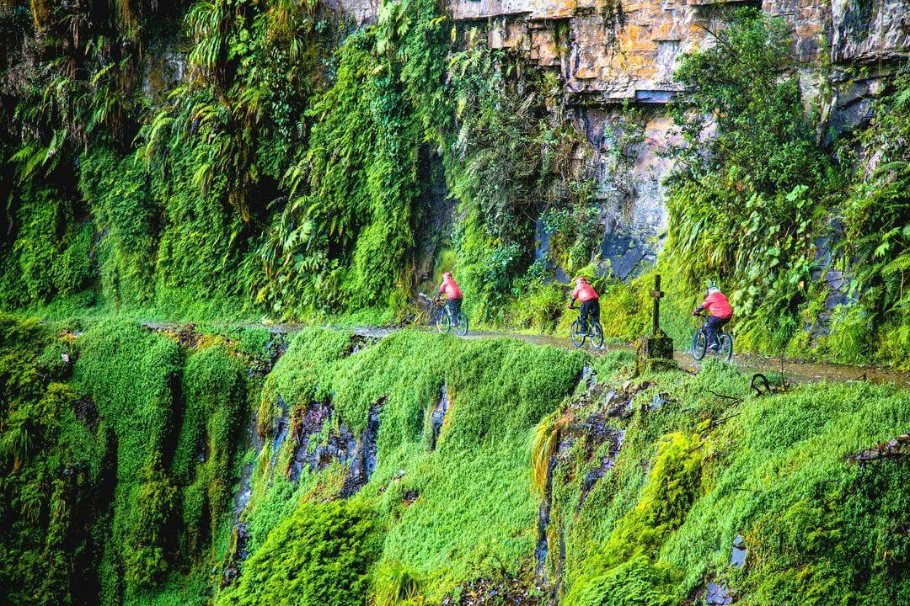

Дорога в горах провинции Юнгас в Боливии, соединяющая Ла-Пас, фактическую столицу страны, с городом Коройко, официально называется Северной Дорогой Юнгас. Но есть у нее более известное, но неофициальное, название — «Дорога смерти». И это не просто красивая метафора.

Этот 40-километровый горный участок дороги был единственный путь от Ла-Паса до райцентра Коройко.
Сейчас взамен North Yungas Road построили просторную и безопасную дорогу, идущую в обход горных массивов. Но машины по «Дороге смерти» ездят до сих пор — местные смельчаки щекочут себе нервы, ну и туристы спешат сюда за острыми ощущениями.
24.07.1984 случилась самая большая в истории North Yungas Road авария: с обрыва упал автобус, погибло 100 человек.
В то время, когда «Дорога смерти» была единственной трассой между Ла-Пасом и Коройко, здесь срывалось вниз больше сотни машин в год.

Дорожные условия там такие: одна полоса движения шириной около трех метров, под колесами — скользкая глина. Никаких специальных ограждений на трассе не предусмотрено: с одной стороны — гора, с другой — обрыв глубиной до 500 метров.
Маршрут круто петляет среди тропического леса, то поднимаясь на высоту в 4200 метров над уровнем моря, то опускаясь до 1200 метров.

Встречные автомобили останавливаются, водители выходят, чтобы обсудить, кто и как первым протиснется по узкой трассе. Особенно опасна Yungas Road в сезон дождей, с ноября по март.
Вот такой сюжет в мокрый сезон вполне реален — кусок дороги оседает и обваливается, а вместе с ним летит в пропасть чей-то автомобиль.

В 1932—1935 годах Боливия вела войну с Парагваем. В ходе этой, Чакской, войны боливийская армия захватила несколько тысяч военнопленных, и именно их отправили прокладывать дорогу от Ла-Паса до Коройко в сложных и опасных высокогорных условиях.
В 70-х годах XX века реконструкцией этой старой, грунтовой дороги занялась фирма из США, но работы ограничились асфальтированием первых 20 километров пути.

О страшных трагедиях напоминают не только многочисленные кресты, установленные на обочине. На склонах горного массива можно увидеть останки автомобилей, велосипедов и автобусов, которые потерпели аварии. Местные жители, отправляясь по Дороге смерти, обычно молились о благополучном путешествии. Тем более, к ближайшему госпиталю здесь приходится добираться в течение многих часов. И по этой же дороге.

ВВЕРХ